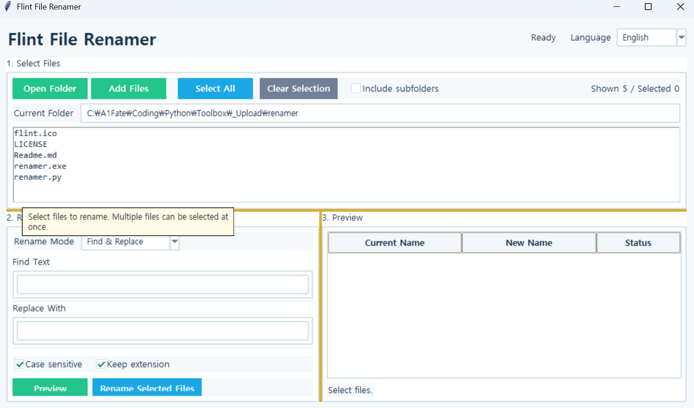

Flint File Renamer
Version: 1.0.0
Flint File Renamer
A tool for renaming multiple files at once.
In addition to simple text replacement, it supports removing text, adding text before or after filenames, numbering files, and batch renaming using a custom name and sequence numbers.
How to Use
- Click
Open Folderand select the folder containing the files. - Select the files you want to rename.
- Choose the desired renaming method under
Rename Method. - Enter the required text or numbering settings.
- Check the new filenames in the preview on the right.
- Click
Rename Selected Filesto apply the changes.
Rename Methods
Find and Replace: Find specific text in filenames and replace it with other textRemove Text: Remove specified text from filenamesAdd Prefix: Add text before the existing filenameAdd Suffix: Add text after the existing filenameAdd Number: Add sequential numbers to existing filenamesName + Number: Rename files using a specified base name and sequential numbers
For methods that use numbering, you can specify the starting number and number of digits.
Example:
photo.jpg
photo_001.jpg
photo_002.jpg
Or:
travel_001.jpg
travel_002.jpg
travel_003.jpg
Key Features
- Batch rename multiple files
- Multiple renaming methods
- Configurable starting number and number of digits
- Automatic preview of new filenames
- Include files in subfolders
- Optional case-sensitive matching
- Option to preserve file extensions
- Duplicate filename detection
- Validation for characters prohibited in Windows filenames
- Prevention of filename conflicts with existing files
- Safe batch renaming using temporary filenames
Run:
python renamer.py
Note:If you are using the executable (EXE) version, you do not need to run the Python command.